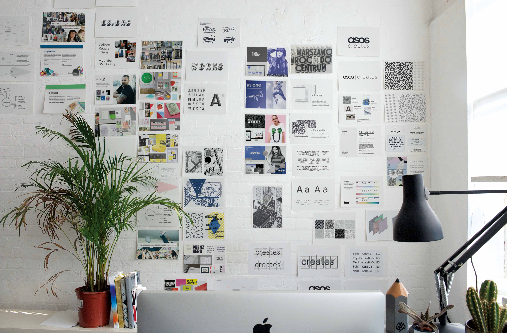
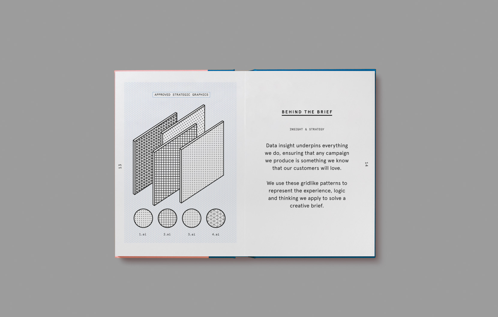
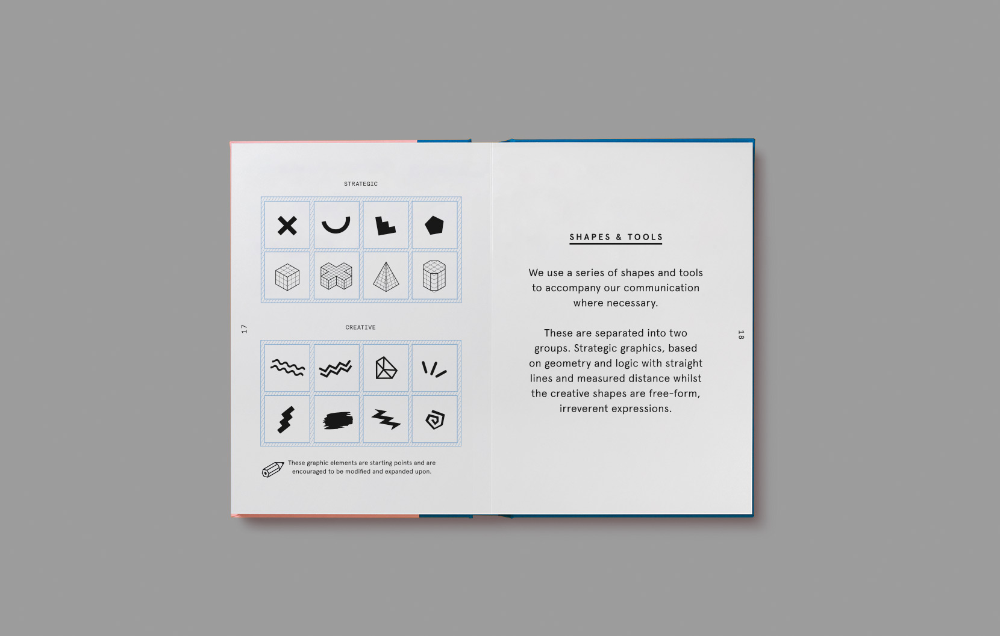
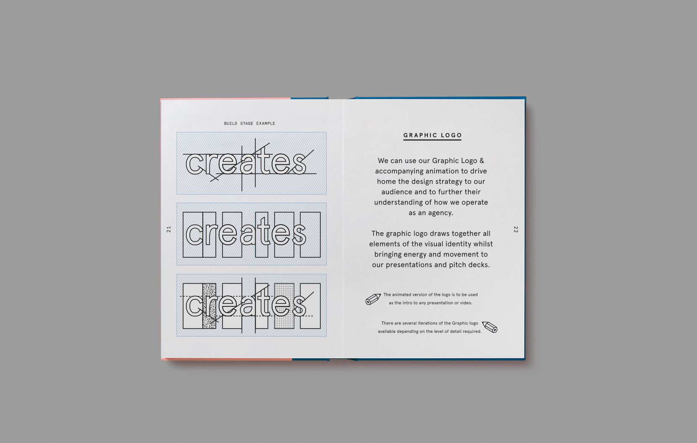
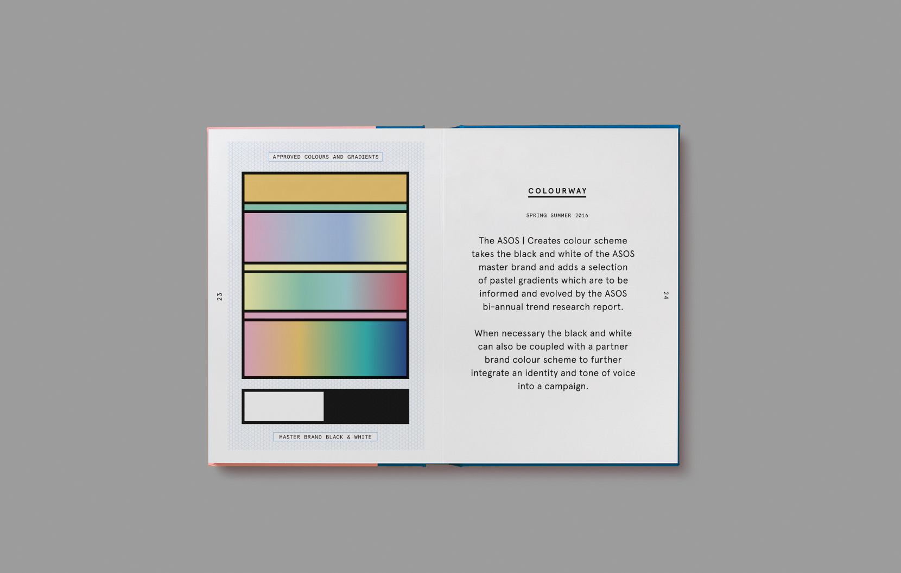
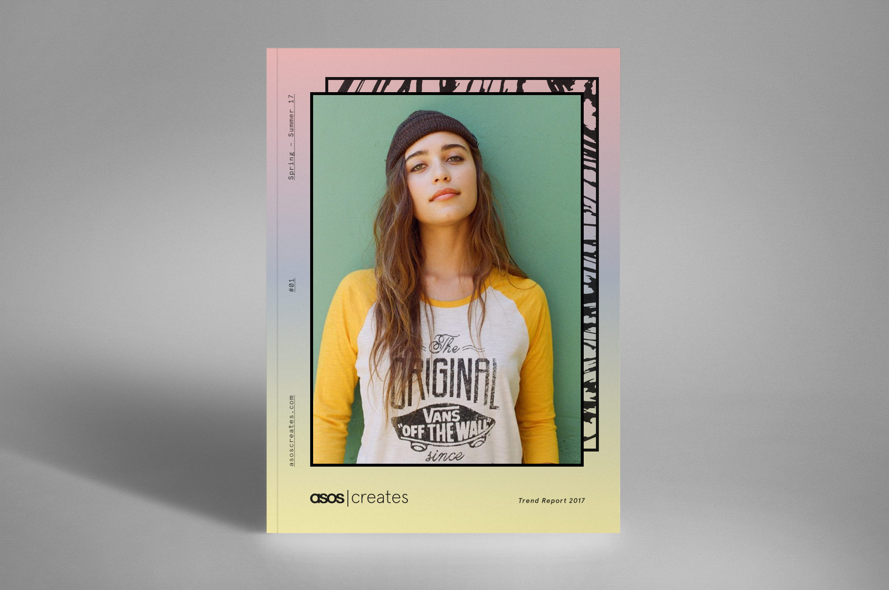

Strategy | Design | Art Direction | Branding
ASOS Creates Brand Identity
UFO was commissioned to create a brand new brand identity for the brand new ASOS creative services department.
Our design work needed to bring together the young, DIY aesthetic of the ASOS master brand alongside a visualisation of the companys considered modular, strategically layered approach. To do this we created geometric grid patterns and shapes to represent the experience, logic and thinking ASOS applies to a campaign. We then created a set of custom fun and vibrant patterns to represent the energy and passion of the talent and their application of creative skills to any brief. With the aim of creating a visual manifestation of how the agency operates, blending expert strategy and insight with unrivalled creative execution.


 
